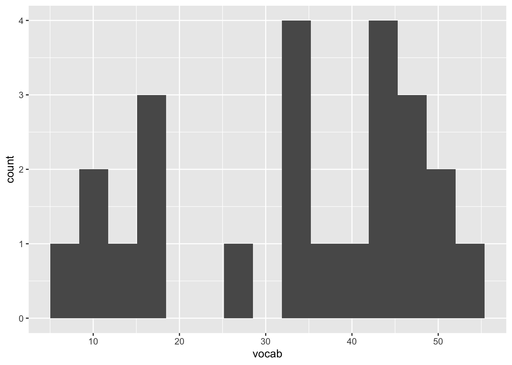
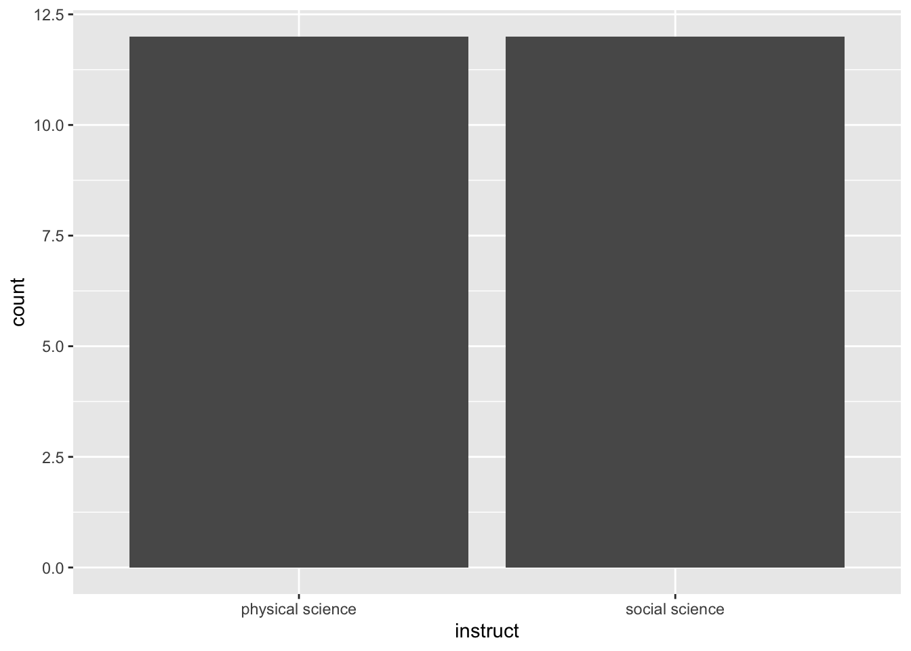
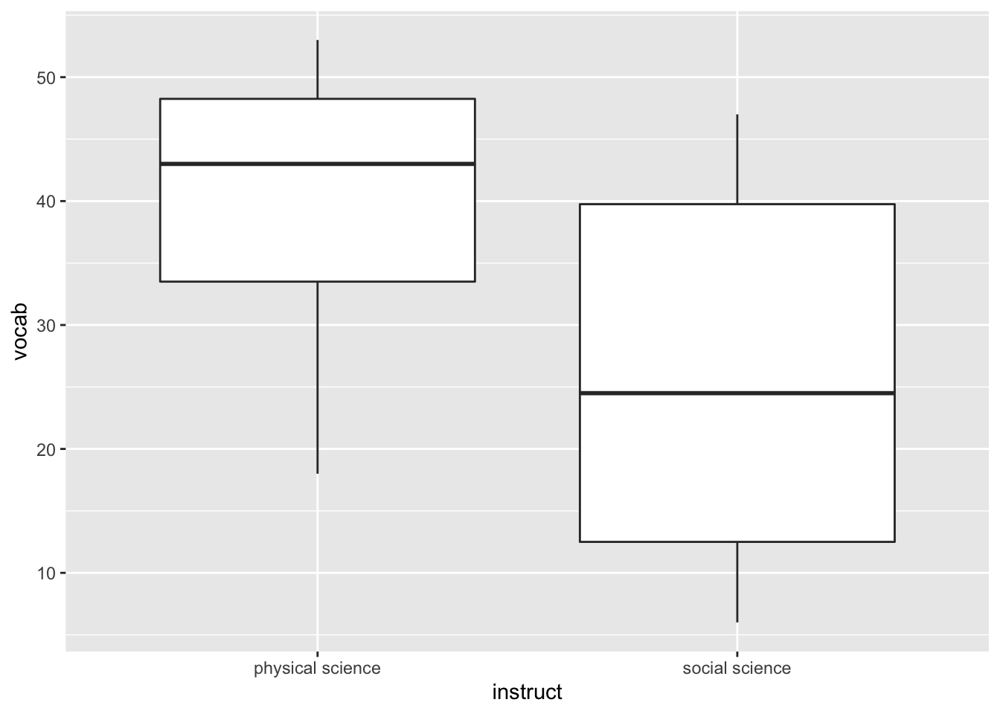

Our study variables include Vocabulary Score as the Dependent Variable (DV), a continuous interval scale with scores ranging from 0 to 60, and Lecture Type as the Independent Variable (IV), with two levels of instruction, physical science (coded as 1) and social science (coded as 2).
This is a between-subjects analysis, as students were randomly assigned to only one type of instruction which, along with the balanced sample among groups, supports the assumption of independence of observations. The assumption of normality seems tenable after visually inspecting the distribution and descriptive statistics for Vocabulary Scores. Finally, the assumption of homogeneity of variance was not met as Levene’s Test for Homogeneity of Variance was significant (F(1, 22)= 6.6, p = .017), indicating that the error (within-group) variance around the mean is not equal across groups.
# Descriptive statistics
describe(df) %>%
select(n, mean, sd, skew, kurtosis, se)## n mean sd skew kurtosis se
## idnum 24 12.5 7.07 0.00 -1.35 1.44
## vocab 24 33.0 14.74 -0.43 -1.31 3.01
## instruct* 24 1.5 0.51 0.00 -2.08 0.10# Descriptive statistics by IV groups
describeBy(x = df$vocab, group = df$instruct, mat = TRUE)## item group1 vars n mean sd median trimmed mad min max
## X11 1 physical science 1 12 40 10.79562 43.0 40.9 11.8608 18 53
## X12 2 social science 1 12 26 15.20167 24.5 25.9 20.7564 6 47
## range skew kurtosis se
## X11 35 -0.56390947 -1.003818 3.116428
## X12 41 0.03928301 -1.914109 4.388345# Histogram distribution of DV
ggplot(data = df, aes(x = vocab)) +
geom_histogram(bins = 15)
# Histogram distribution of sample between groups of IV
ggplot(data = df, aes(x = instruct)) +
geom_histogram(stat="count")
# Boxplot of vocab scores by instruct
ggplot(data = df, aes(x = instruct, y = vocab)) +
geom_boxplot()
# Homogeneity of variance test
car::leveneTest(vocab ~ instruct, data = df, center = "mean")## Levene's Test for Homogeneity of Variance (center = "mean")
## Df F value Pr(>F)
## group 1 6.6 0.0175 *
## 22
## ---
## Signif. codes: 0 '***' 0.001 '**' 0.01 '*' 0.05 '.' 0.1 ' ' 1According to the omnibus F statistic for the tested model, there was a significant effect of instruction type on students’ vocabulary scores (F(1, 22)= 6.766, p = .016). Namely, the average number of memorized vocabulary words was significantly higher for students in the physical science group (M = 40, SD = 10.80) than for their peers in the social science instruction group (M = 26, SD = 15.20).
# F-ratio
## calculate the total group variance (i.e., grand mean difference)
SST <- sum( (df$vocab - mean(df$vocab))^2 )
## transform from long to wide data to calculate within group variance
df_wide <- spread(df, instruct, vocab) %>%
clean_names()
## calculate the within group variance, for each group
SSW.1 <- (df_wide$physical_science - mean(df_wide$physical_science, na.rm = T))^2
SSW.2 <- (df_wide$social_science - mean(df_wide$social_science, na.rm = T))^2
## sum within group variance (sum of squares within)
SSW <- sum(SSW.1, SSW.2, na.rm = T)
## calculate difference for between group variance and group variance
SSB <- SST-SSW
## calculate mean square between
MSB <- SSB/1 # (no. of groups - 1) or 1 degrees of freedom
## calculate mean square within
MSW <- SSW/22 # (sample size - no. of groups) or 22 degrees of freedom
## produce F-ratio statistic
Fratio <- MSB/MSW
Fratio## [1] 6.76569## produce p-value for F-ratio
p.val <- pf(Fratio, 1, 22, lower.tail=FALSE)
p.val## [1] 0.01630597